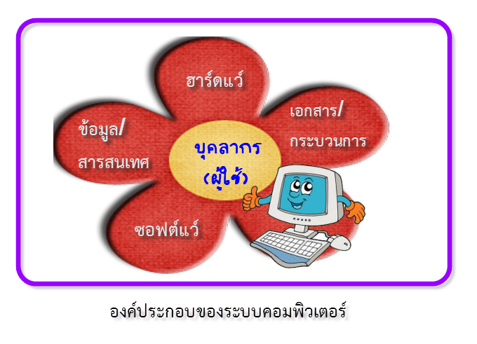

ฮาร์ดแวร์ (Hardware)
ตัวเครื่องและอุปกรณ์ที่จับต้องได้ 6 ประเภท ตั้งแต่อุปกรณ์นำเข้าจนถึงอุปกรณ์แสดงผล
ดูเนื้อหาเรียนรู้ฮาร์ดแวร์ ซอฟต์แวร์ บุคลากร ข้อมูล และหลักการทำงานของ CPU แบบเข้าใจง่าย
เริ่มเรียนเลยตัวเครื่องและอุปกรณ์ที่จับต้องได้ 6 ประเภท ตั้งแต่อุปกรณ์นำเข้าจนถึงอุปกรณ์แสดงผล
ดูเนื้อหาชุดคำสั่งที่สั่งให้ฮาร์ดแวร์ทำงาน แบ่งเป็นซอฟต์แวร์ระบบและซอฟต์แวร์ประยุกต์
ดูเนื้อหาผู้ใช้ทั่วไป ผู้เชี่ยวชาญ และผู้บริหาร ที่เกี่ยวข้องกับการใช้งานคอมพิวเตอร์
ดูเนื้อหาเมื่อเรียนจบบทเรียนนี้ ผู้เรียนสามารถ
